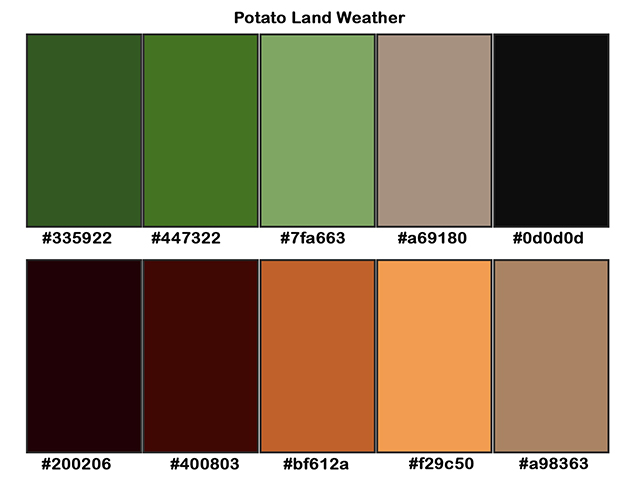

These two palettes are my starting colors.
They are from photos of potatoes and a potato plant. I will be adapting color usage as I build the site.
reference the elements/content to which the colors will apply
reference the elements/content to which the colors will apply